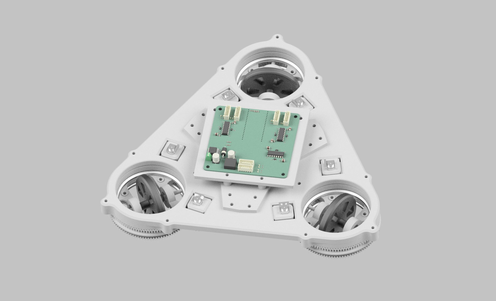

After finishing all of the controls for the single swerve module, I decided to design a full swerve drivetrain with three modules.
I designed a custom breakout PCB that features signal filtering and power management.
One of the biggest challenges with this project was GPIO pin allocation. In hindsight I should have used some kind of pin expander but for this project I barely got away with 24 GPIO pins. I ended up driving each motor with phase-enable control using an H-Bridge and MOSFET inverter in order to conserve 1 pin per motor.